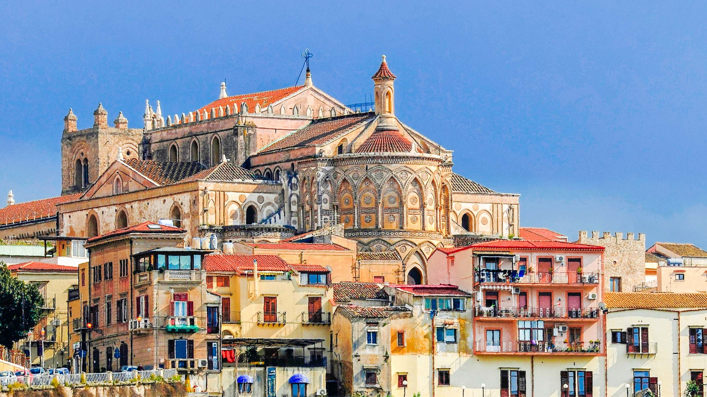

DUOMO DI MONREALE
Il capolavoro arabo-normanno
Situato a pochi chilometri da Palermo, il Duomo di Monreale è famoso in tutto il mondo per i suoi straordinari mosaici bizantini a fondo d'oro che ricoprono quasi interamente le pareti interne, culminando nel maestoso e imponente Cristo Pantocratore dell'abside.